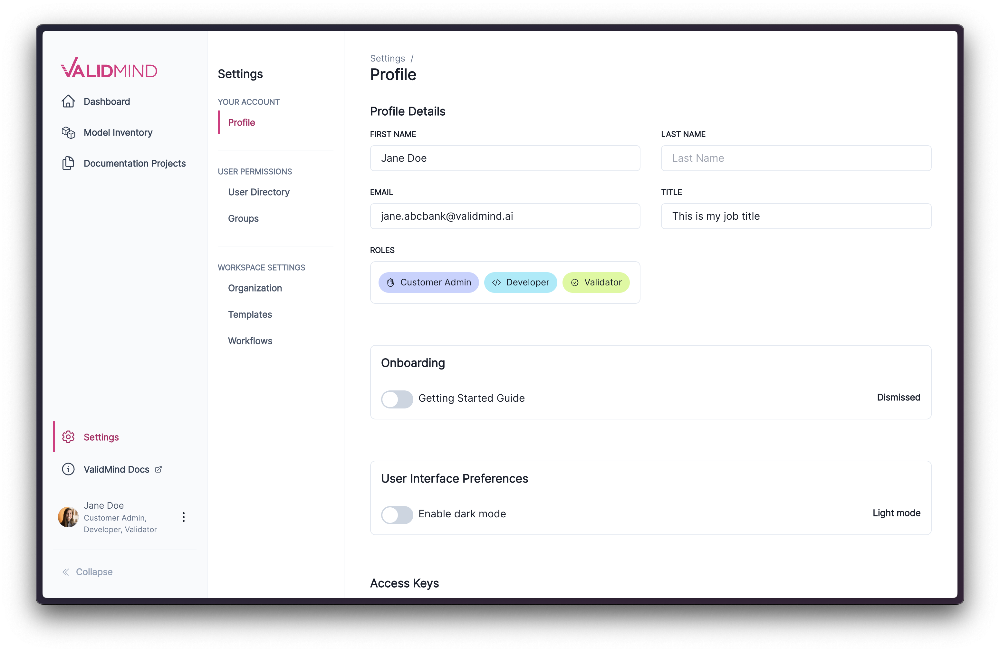
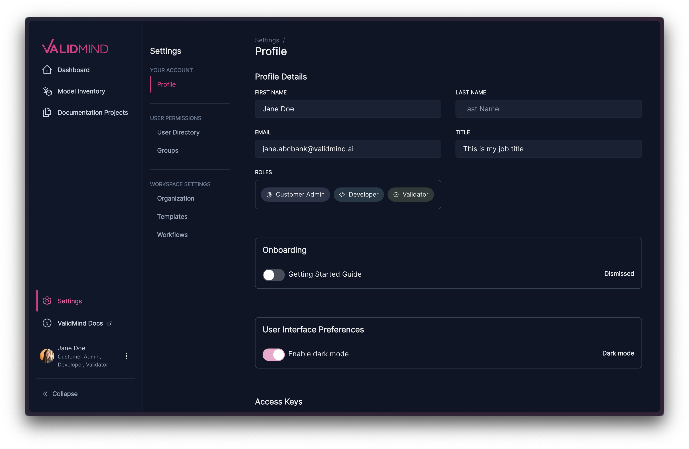

January 17, 2024
Release highlights
This release introduces a new dark mode to the ValidMind Platform UI, along with other enhancements and bug fixes.
ValidMind Platform UI (v1.11.0)
Dark mode
You now have the option to set your color theme preference for the ValidMind UI. The theme can be set by toggling Enable Dark Mode in your profile settings.
Here is how the available themes look side by side:


The selected theme setting is saved to your user profile and applied across all devices where you log in.
Enhancements
- Upgraded kbar package: We’ve updated the kbar package, a component in our web application responsible for the command bar interface. The new version brings enhanced search performance, particularly for multi-word queries.
Bug fixes
- Dynamic index display in templates. We fixed an issue where the internal
orderandindexproperties were incorrectly exposed in the template editor. These properties have no effect during template editing as they are dynamically generated. The fix now prevents these properties from being saved back to the template.
- Allow clicking on activities related to dynamic text blocks. We fixed an issue where clicking on recent activity items related to comments or test descriptions inside a test- driven block would take the user to a non-existent page. This functionality has been corrected by redirecting the user to the section that a content block belongs to.
Issues with search. We implemented multiple fixes to the search functionality in the Platform UI:
- Linking from recent activity items has been corrected to ensure accurate navigation.
- Routing to documentation pages when a search result is associated with text in a test-driven block now works as expected.
- Search now excludes results for
content_idthat are no longer part of the documentation. - Search functionality is now available from project overview pages. Previously, search only worked when invoked from documentation pages.
Issues with the user picker component. We fixed the following UI/UX issues with the user picker interface component:
- Clicking on X now properly clears the current search input and dismisses the user list.
- Clicking on Cancel now properly clears out any unsaved users from the list.
- Entering text now correctly filters users that match the search criteria.
- A new ‘micro search’ utility improves user matching.
Additionally, we updated the business unit selector component to be a simple dropdown.
- Disappearing status updates on dashboard. We fixed an issue where the Recent activity widget would become unavailable when clicking on Status updates. We now show an empty state element when there is no data to show.
How to upgrade
To access the latest version of the ValidMind Platform UI, reload your browser tab.
To upgrade the ValidMind Developer Framework:
Using Jupyter Hub: reload your browser tab and re-run the
!pip install --upgrade validmindcell.Using Docker: pull the latest Docker image:
docker pull validmind/validmind-jupyter-demo:latestIn your own developer environment: restart your notebook and re-run:
!pip install validmind